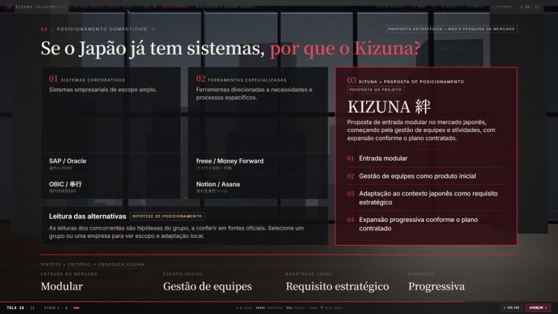
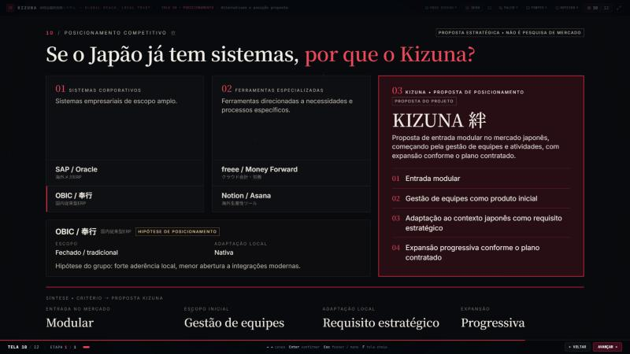
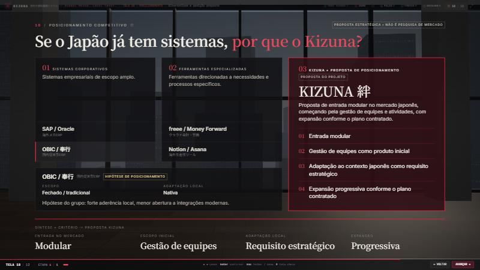
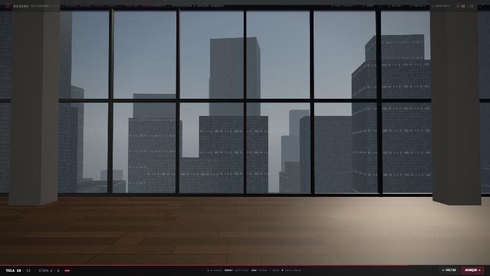
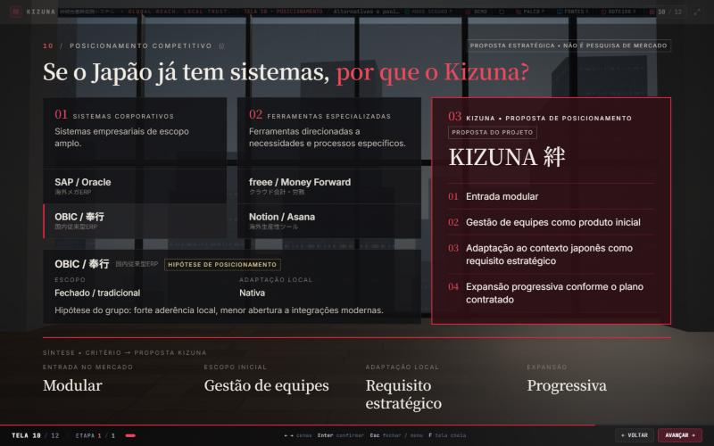
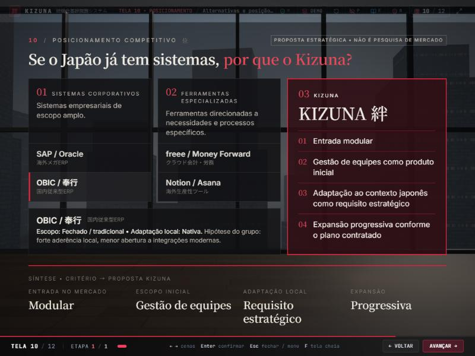
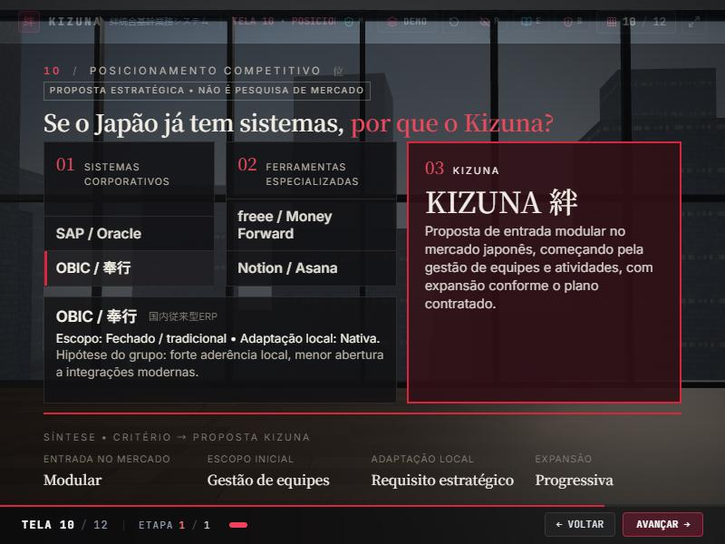

Etapa 9 • Tela 10 — o ambiente corporativo onde o Kizuna pretende competir
Antes: comparação editorial sobre fundo escuro. Depois: andar executivo de pé-direito duplo, com piso de madeira, pilares de concreto e fachada de vidro do piso ao teto voltada para Tóquio, vista do alto em luz natural através de vidro levemente fumê. Uma faixa de sol entra pela janela à direita, atrás da coluna do Kizuna. Câmera fixa (tela contemplativa). Os três blocos ganharam fundo mais opaco para a leitura. Capturas em 1920 × 1080, salvo indicação.
Cena única • sem seleção


Cena única • OBIC / 奉行 selecionado


Cenário e outras resoluções



